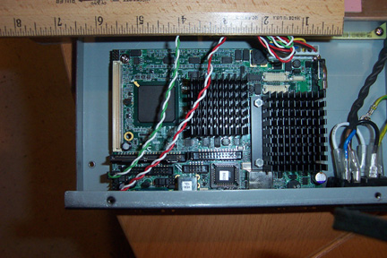

As Sun continues to avail more of its intellectual property to the community, the advantages Sun employees have regarding access to internal resources almost disappear. In fact now when attempting to post questions to internal Sun mail aliases, I am often times redirected to the community. The ramifications of this change hit me square in the gut this summer.
Having stumbled upon an internal project investigating how Solaris might be minimized for embedded use, I thought an interesting offshoot of this effort might be to create a ZFS appliance. This device would boot from flash entirely into RAM, and all state would be maintained by the ZFS volumes. Turns out this may be a little more tricky than anticipated, and future ZFS enhancements to Solaris (ZFS boot) may make this idea moot.
Based on an OpenSolaris ZFS discussion I initiated, observers went off and wrote about this topic elsewhere, some predicting that Sun would be releasing embedded ZFS appliances. Whoa, hold on there, not so fast. We have no plans (at least that I know of) to do any such thing. This was nothing more than a pet project of mine. Serves me right for announcing that I was a Sun employee.
But there was some good that came out of this dialog. In
addition to learning the valuable lesson of being careful what you
write, interest in the notion of using Solaris as an "embedded" OS
was quite apparent. As a consequence, I thought
it might make sense to publish the basic framework used to create
a custom Solaris miniroot. Included below is the
introduction section of the README
file:
1.0 Introduction
With the advent of Solaris 10 Update 1 and its migration to the grub(5) bootloader, it becomes quite feasible and straightforward to consider creating small footprint "embedded" versions of Solaris which boot directly into RAM. This project is based upon work done by Shudong Zhou to create a minimized Solaris for embedded use. The doc/ directory contains some of the original documentation and scripts used to build such an environment.
It is expected that entities may want to provide further functionality and customizations to this environment. In order to assist in this endeavor, the original work has been enhanced to utilize the Java-based ant(1) build tool. For a further description on how a miniroot image is created, see the section on "Understanding the ant(1) build process".
You can download the framework here
Miscellaneous notes:
